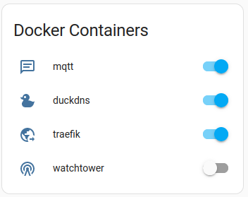

Mise à jour de Home assistant

J'utilise une version Container de Home Assistant, qui contrairement à la version Operating System ne permet pas de faire de mise à jour via son IHM. 1
Watchtower est l'outil qui me permet de recréer le container docker Home Assistant avec la dernière version publiée.
Warning
Maintenir l'application à jour permet de bénéficier de nouvelles fonctionnalités, mais aussi de corrections d'anomalies ou de failles de sécurité.
Matériel utilisé
Un serveur hébergeant Home Assistant en utilisant des containers docker.
Pour plus de détails, voir ma configuration.
Mise en oeuvre
J'ai choisi d'installer Watchtower, sous la forme d'un container docker, pour automatiser la mise à jour de Home Assistant.
Le logiciel propose de nombreuses options, parmi lesquelles j'ai sélectionné les suivantes:
- WATCHTOWER_CLEANUP=true, permet de supprimer les anciennes versions de l'image docker qui ne sont plus utilisées. Cela permet de ne pas remplir son disque dur inutilement,
- WATCHTOWER_LABEL_ENABLE=true, permet de mettre à jour uniquement les containers contenant le label
com.centurylinklabs.watchtower.enable=true, - WATCHTOWER_RUN_ONCE=true, permet de lancer la montée de version à la demande. Le container se lance, fait ce qu'il doit faire, puis s'arrête.
version: "3"
services:
watchtower:
image: containrrr/watchtower
volumes:
- /var/run/docker.sock:/var/run/docker.sock
environment:
- WATCHTOWER_CLEANUP=true
- WATCHTOWER_LABEL_ENABLE=true
- WATCHTOWER_RUN_ONCE=true
labels:
- "com.centurylinklabs.watchtower.enable=true"
Configuration Home Assistant
Ajout du label au container docker pour qu'il soit pris en compte par Watchtower.
services:
home-assistant:
image: ghcr.io/home-assistant/home-assistant:stable #(1)
labels:
- com.centurylinklabs.watchtower.enable=true #(2)
- La version est
stable, c'est à dire la dernière version taguée stable, mais elle n'est récupérée que lors de la création initiale du container. Les mises à jour ultérieures seront faite parWatchtower. - Indique à
Watchtowerqu'il doit gérer les mises à jour de ce container.
Déclenchement manuel de la mise à jour
Pour des raisons pratiques, je souhaite choisir le moment de la mise à jour (éviter par exemple une veille de départ en WE).
J'ai pour cela ajouté un bouton au dashbord Home Assistant :
entities:
- entity: switch.mqtt
- entity: switch.duckdns
- entity: switch.traefik
- entity: switch.watchtower #(1)
icon: mdi:radio-tower
secondary_info: none
show_header_toggle: false
title: Docker Containers
type: entities
- Le switch permet de contrôler un container docker exposé grâce à ha-dockermon
Ce qui permet d'obtenir ce rendu :

Par défaut watchtower est arrêté. Le bouton permet de démarrer l'instance et d'appliquer les mises à jour en attente.
Celle de Home Assistant est également visible au niveau de mon dashbord :
type: entity-filter
entities:
- entity: sensor.docker_hub
- entity: sensor.installed_version
- entity: binary_sensor.docker_hub_update_available
state_filter:
- operator: '=='
value: 'on'
show_empty: false
card:
type: glance
Ce qui permet d'obtenir ce rendu :